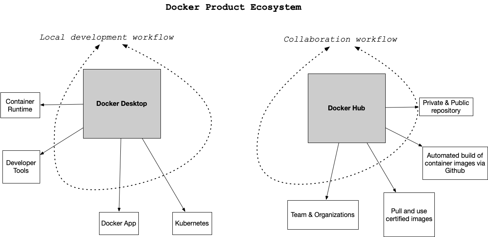

01. Docker Containers
Docker Format Containers
Docker Containers
Getting started with Docker
There are two main components of Docker: Docker Desktop and Docker Hub.

Docker Desktop Overview
The desktop application contains the container runtime which allows containers to execute. The Docker App itself orchestrates the local development workflow including the ability to use Kubernetes, which is an open-source system for managing containerized applications that came out of Google.
Docker Hub Overview
So what is Docker Hub and what problem does it solve? Just as the git source code ecosystem has local developer tools like vim, emacs, Visual Studio Code or XCode that work with it, Docker Desktop works with Docker containers and allows for local use and development.
When collaborating with git outside of the local environment, developers often use platforms like Github or Gitlab to communicate with other parties and share code. Docker Hub works in a similar way. Docker Hub allows developers to share docker containers that can serve as a base image for building new solutions.
These base images can be built by experts and certified to be high quality: i.e. the official Python developers have a base image. This allows a developer to leverage the expertise of the true expert on a particular software component and improve the overall quality of their container. This is a similar concept to using a library developed by another developer versus writing it yourself.
ND9991 C04 L02 A01 Docker Containers
Real-World Use Cases of Docker Containers
Real-World Examples of Containers
What problem do Docker format containers solve? In a nutshell, the operating system runtime can be packaged along with the code, and this solves a particularly complicated problem with a long history. There is a famous meme that goes "It works on my machine!". While this is often told as a joke to illustrate the complexity of deploying software, it is also true. Containers solve this exact problem. If the code works in a container, then the container configuration can be checked in as code. Another way to describe this concept is that the actual Infrastructure is treated as code. This is called IaC (Infrastructure as Code).
Here are a few specific examples:
Developer Shares Local Project
A developer can work on a web application that uses flask (a popular Python web framework). The installation and configuration of the underlying operating system is handled by the Docker container file. Another team member can checkout the code and use docker run to run the project. This eliminates what could be a multi-day problem of configuring a laptop correctly to run a software project.
Data Scientist shares Jupyter Notebook with a Researcher at another University
A data scientist working with jupyter style notebooks wants to share a complex data science project that has multiple dependencies on C, Fortran, R, and Python code. They package up the runtime as a Docker container and eliminate the back and forth over several weeks that occurs when sharing a project like this.
A Machine Learning Engineer Load Tests a Production Machine Learning Model
A Machine learning engineer has been tasked with taking a new model and deploying it to production. Previously, they were concerned about how to accurately test the accuracy of the new model before committing to it. The model recommends products to paying customers and, if it is inaccurate, it costs the company a lot of money. Using containers, it is possible to deploy the model to a fraction of the customers, only 10%, and if there are problems, it can be quickly reverted. If the model performs well, it can quickly replace the existing models.
Why Docker Containers vs Virtual Machines?
Why Docker Containers vs Virtual Machines?
What is the difference between a container and a virtual machine? Here is a breakdown:
- Size: Containers are much smaller than Virtual Machines (VM) and run as isolated processes versus virtualized hardware. VMs can be GBs while containers can be MBs.
- Speed: Virtual Machines can be slow to boot and take minutes to launch. A container can spawn much more quickly typically in seconds.
- Composability: Containers are designed to be programmatically built and are defined as source code in an Infrastructure as Code project (IaC). Virtual Machines are often replicas of a manually built system. Containers make IaC workflows possible because they are defined as a file and checked into source control alongside the project’s source code.
Reflect: Docker Containers
QUESTION: Reflect
- What is Docker/a container? How is it different from a virtual machine?
- What is the advantage of docker containers?
ANSWER:
Thanks for your response.